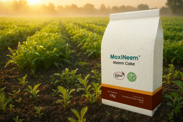
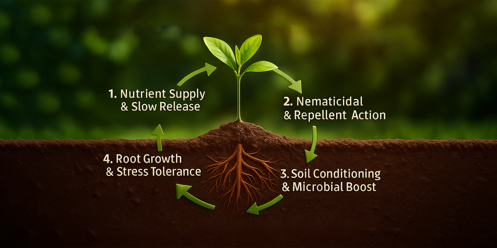

Maxineem Granular
Neem Cake (>5% azadirachtin residues) — Granular / Powder
Download technical sheet
Maxineem is a high-quality neem cake substrate rich in organic nutrients and residual azadirachtin fractions. It improves soil organic matter, feeds beneficial microbes, and suppresses soil-borne pests and nematodes. Maxineem functions as both a soil conditioner and a biological deterrent, extending nitrogen availability through natural nitrification inhibition. Reliable sourcing, sterilization, and particle-size control ensure consistent performance for distributors serving sustainable and organic farming markets.
Organic NPK nutrition with residual neem bioactives for dual-action soil improvement
Suppresses nematodes, soil insects, and pathogenic fungi through azadirachtin fractions
Extends nitrogen availability through natural nitrification inhibition
Supplied in granular or powder grades to suit broadacre spreading, nursery mixes, and precision application.
Neem Cake (>5% azadirachtin residues) — Granular / Powder
Download technical sheet
Organic NPK nutrition with residual neem bioactives for dual-action soil improvement
Suppresses nematodes, soil insects, and pathogenic fungi through azadirachtin fractions
Extends nitrogen availability through natural nitrification inhibition
Improves soil organic matter, microbial diversity, and long-term soil health

Maxineem releases organic nitrogen, phosphorus, and potassium gradually through microbial decomposition of neem protein fractions in the soil. Residual azadirachtin and limonoid compounds disrupt the development and reproduction of soil-borne nematodes and insects, reducing root damage and pest pressure. Simultaneously, the organic matter fraction feeds beneficial microbial populations, improves soil aggregation, and inhibits nitrifying bacteria to extend nitrogen availability for crops.
| Application | Dosage | Carrier / Method | Application Interval | Guidance |
|---|---|---|---|---|
| Field crops & vegetables | 100–200 kg/acre | Broadcast and incorporate before planting | At land preparation | Blend with compost or farmyard manure for uniform coverage. |
| Plantation crops | 5–10 kg/tree/year | Apply in basins or along drip line | Split into 2–3 applications annually | Cover lightly with soil and irrigate after application. |
| Nurseries / potting mixes | 5–10% of media volume | Blend thoroughly with potting substrate | At media preparation | Ensure uniform mixing for consistent nutrient release. |
| Top dressing & turf | 50–100 kg/acre | Broadcast evenly and water in | Every 6–8 weeks | Best applied after mowing or aeration for turf. |
Adjust rates based on soil tests, crop requirements, and organic certification standards.
Nematode pressure is reducing root health and crop productivity.
Apply Maxineem as a basal amendment to introduce nematicidal azadirachtin fractions at the root zone.
Soil organic matter is declining and nutrient availability is inconsistent.
Use Maxineem to rebuild organic matter, feed beneficial microbes, and slow nitrogen loss through nitrification inhibition.
Premium neem cake substrate positioned for dual-action soil nutrition and biological pest suppression in sustainable and organic farming systems.
Deliver neem-powered nutrition and protection with Kriya’s premium substrate, supported by technical and regulatory expertise.